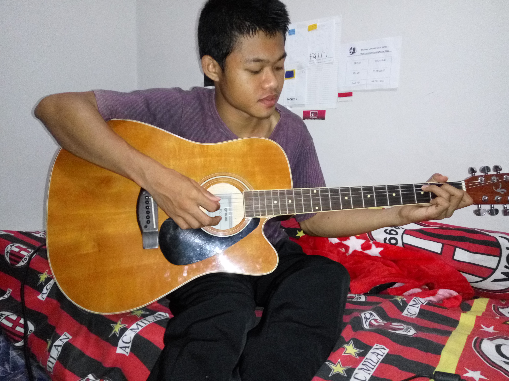

Keinginanku

Dari dulu saya ingin pandai bermain gitar, tetapi masih belum bisa memainkannya karena saya kurang latihan. dan teringat kata teman jika ingin bisa bermain gitar, milikilah gitar terlebih dahulu. Dan sekarang saya ingin menabung untuk membeli gitar. Karena bagi saya keren itu ialah ketika kita bisa bermain gitar.